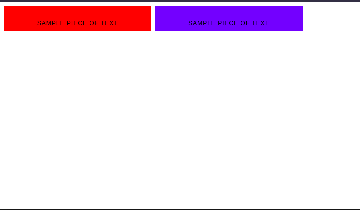
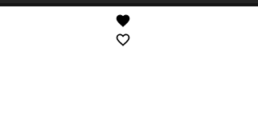
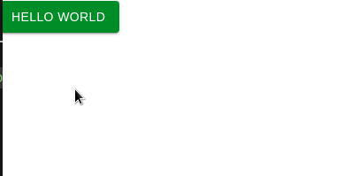
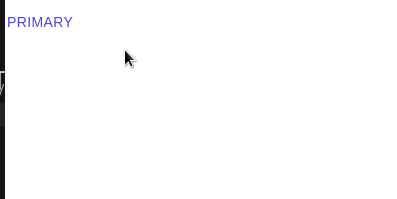
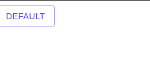
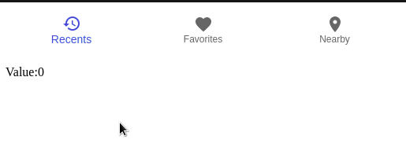
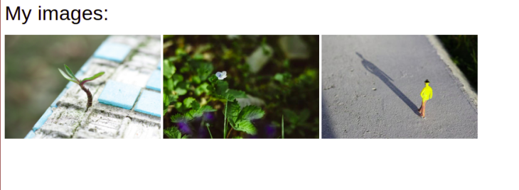
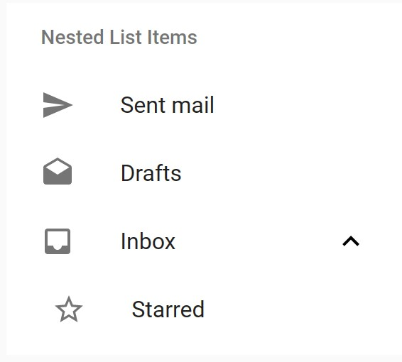

Material-UI
Presentation created by Goriachkina Viktoriia
Material UI
Material UI is an open-source React component library that implements Google's Material Design.
Why use Material UI?
- Here are the reasons why developers prefer to integrate MUI into their applications:
Who uses Material UI and its integrations?
Node.js, React, Next.js, Emotion, and etc, represent some of the most popular tools that are integrated with Material-UI. About 214 companies use Material UI in their technology stacks
Installation
- npm:
npm install @material-ui/core - yarn:
yarn add @material-ui/core
Install Material-UI source files through:
Some of the fundamentals of MUI
In Material Design, the font choice defaults to Roboto. However, MUI does not ship with the Roboto fault.
- Install from a CDN:
- Install with npm:
npm install @fontsource/roboto
CSS Baseline
There is a collection of HTML element and attribute-style normalizations - normalize.css.
MUI provides its own version of normalize.css - CssBaseline
- CSSBaseline does the following:
- The margin in all browsers is removed
- The default Material Design background color is applied
- Font antialiasing is enabled for better display of the Roboto font
- No base font-size is declared on the <html>, but 16px is assumed (browser default)
Grid layout
Material Design`s responsive UI is based on a 12-column grid layout. This grid creates visual consistency between layouts.
Example:
Icons in React MUI
Icons are a huge part of material design. Icons in MUI can be rendered using two methods: Icon for rendering font icons, and SvgIcon for rendering SVG paths.
Example:
Buttons
Buttons allow users to take action and make choices with a single tap. They help communicate an action a user can take.
Example:
Flat buttons
Flat buttons are buttons with only text. They have no background color and no border.
Example:
Outlined buttons
Outlined buttons are text-only buttons with medium emphasis. Their appearance is usually characterized by a border and a background color on hover.
Example:
Material-UI components
Navigation
Bottom navigation menus are placed at the bottom and they make it easy to switch between top-level views in a single tap.
Example:
Image list
An image list consists of a repeated pattern of cells arrayed in a vertical and horizontal layout and it usually features images.
Example:
Lists
Lists present multiple line items vertically as a single continuous element.
Example:
